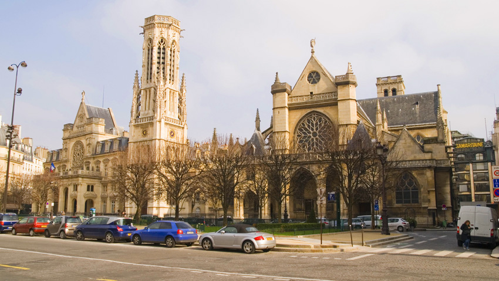
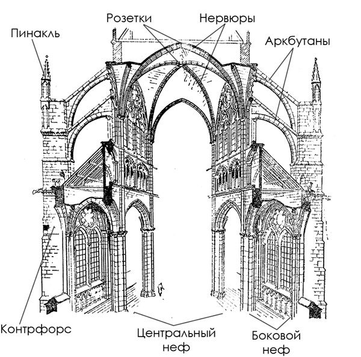
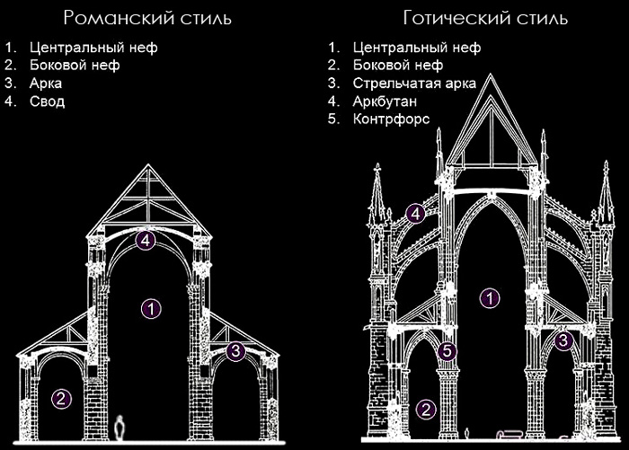
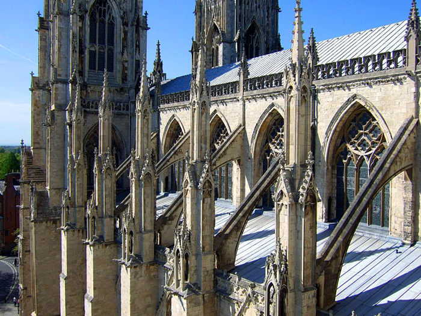
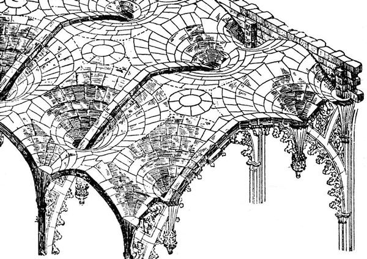
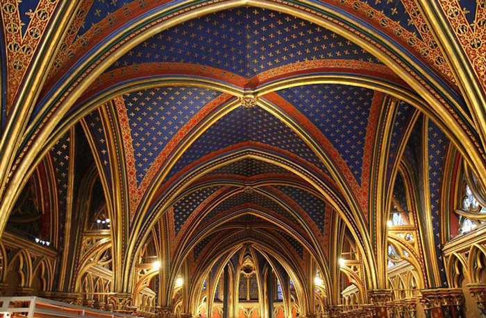
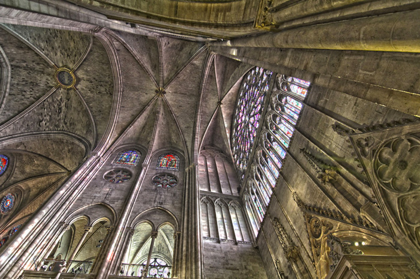
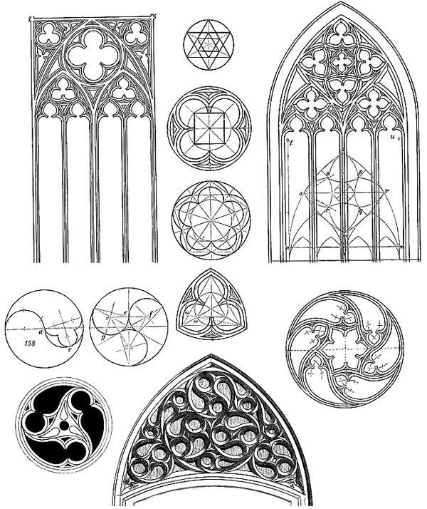
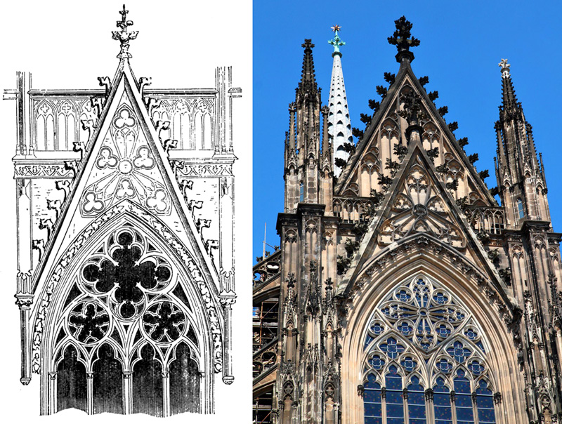
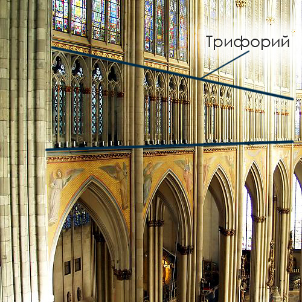

Готический стиль в архитектуре зародился в Европе в зрелом и позднем средневековье (12-15 века). Готика сменила архитектуру Романского стиля и в свою очередь уступила место архитектуре Ренессанса.
Термин "готика", "готическая архитектура" происходит от слова "готы" - варварские племена с севера. Термин возник позже (в Новое время) как презрительное обозначение всего привнесённого в европейское искусство варварами-готами и подчёркивал радикальное отличие средневекового зодчества от античного искусства Древнего Рима.

В эту эпоху средневековья роль Церкви в жизни общества достигало максимального влияния. Церковь занималась не только религиозными делами, но активно вмешивалась в политику, экономику, образование, искусство. В те времена развитие науки полностью было сосредоточено в рамках Церкви. Поэтому готический стиль изначально зародился именно в церковном строительстве, а уже после перешёл и на светскую архитектуру.
Собор в средневековье был центральным местом любого города. Его регулярно посещали множество прихожан, в нём обучались, здесь жили нищие, и даже разыгрывались театральные постановки. В источниках нередко упоминается, что и правительство заседало в церковных помещениях. Изначально готический стиль для собора имел для себя цель существенно расширить пространство, сделать его более светлым.
Новые требования жизни с одной стороны и развитие науки и техники с другой стороны, стали предпосылками к появлению технически сложного готического тиля. Решающим фактором стало открытие нового способа распределения нагрузки: вес и давление каменной кладки могут концентрироваться в определённых точках, и если их поддержать именно в этих местах, другим элементам постройки уже не обязательно быть несущими. Так возник готический каркас:

Отличием от предшествующих стилей стало то, что свод перестали опирать на сплошные толстые стены здания, массивный цилиндрический свод заменили ажурным нервюрным крестовым, давление этого свода передается нервюрами и арками на столбы (колонны). Возникающий таким образом боковой распор воспринимается аркбутанами и контрфорсами, вынесенными наружу здания.
Такая конструктивная схема была открыта ранее - в предшествующую эпоху Романского стиля. Но более монументальный готический стиль привнёс свои новые особенности, которые отражены на данной схеме:

Эти конструктивные решения позволяли не только экономить строительные материалы, но и сделать внутреннее пространство храма более просторным, отказавшись от загромождавших и затемнявших его колонн. Готические храмы задумывались таким образом, чтобы они были способны вместить в себя жителей всего города одновременно. Пространство между колоннами заполнялось тонкими стенами, покрытыми резьбой, или цветными витражами в стрельчатых арочных проёмах. Увеличение площади остекления улучшило освещённость нефа.
Всё это сделало возможным также и радикальное увеличение высоты зданий в сравнении с предшествующим Романским стилем.
Конструктивные и художественные элементы готического стиля:
● контрфорс - вертикальная конструкция, представляющая собой либо выступающую часть стены, вертикальное ребро, либо отдельно стоящую опору, связанную со стеной аркбутаном. Предназначена для усиления несущей стены путём принятия на себя горизонтального усилия распора от сводов. Внешняя поверхность контрфорса может быть вертикальной, ступенчатой или непрерывно наклонной, увеличивающейся в сечении к основанию;
● аркбутан - наружная каменная полуарка, передающая горизонтальное усилие распора от сводов на опорный столб (контрфорс), расположенный за пределами основного объёма здания;

● пинакль - декоративная копьевидная башенка, часто увенчиваемая остроконечным фиалом. Пинакли ставились в основном наверху контрфорсов, также на уступах контрфорсов и башен, на коньках и столпах стен. Конструктивной функцией пинакля является пригруз опоры аркбутана, чтобы предотвратить её сдвиг. Для данной цели пинакли нередко утяжеляли свинцом;
● нервюры (фр. nervure — жилка, прожилка) — выступающее ребро каркасного крестового свода.
Наличие нервюр в совокупности с системой контрфорсов и аркбутанов позволяет облегчить свод, уменьшить его вертикальное давление и боковой распор и расширить оконные проёмы. Нервюрный свод также называют веерным. Система нервюр образует каркас, облегчающий кладку свода.

Готические своды Сен-Шапель — часовни-реликварии на территории бывшего Королевского дворца на острове Сите в Париже:

Своды готического собора:

● масверк — готический декоративний каркасный орнамент, все элементы которого построены при помощи циркуля. Состоит из стилизованных трилистников либо четырёхлистников, кругов и их фрагментов. Выполняется глубоким рельефом на деревянных либо каменных конструкциях.

● Вимперг — (нем. Vimperg) – высокий остроконечный декоративный фронтон, завершающий порталы и оконные проемы готических зданий. Поле вимперга украшалось ажурной или рельефной резьбой; по краям вимперг обрамлялся каменными пластическими деталями и увенчивался крестоцветом (флероном).

● Трифорий — невысокая декоративная галерея в средневековых соборах Западной Европы, расположенная в толще стены над арками, отделяющими боковые нефы от среднего.

Родиной готической архитектуры является Франция. Крёстным отцом готического стиля считается влиятельный и могущественный аббат Сугерий, который в 1135-44 гг. перестроил в новом стиле базилику аббатства Сен-Дени. Сугерий писал, что высокий, залитый светом храм призван символизировать безбрежный свет, исходящий от Бога. Вскоре вслед за Сен-Дени новый стиль был применён при возведении собора Парижской Богоматери (заложен в 1163) и Ланского собора (заложен в 1165).